about
hello again — here's the longer story
extra, extra! read all about it!
hi! i'm Lindsey — a designer, developer, and musician based in the bay area. i like making complicated things feel simple!
i grew up an arts kid: music, performing arts, video games, and anime. at ten, i was teaching myself how to make motion graphics animations because i loved how the combination of color, design, movement, and music could make people feel something.
i struggled in math and science, so i was so sure that STEM wasn't for me. my friends told me they thought I might like programming, and being stubbornly insistent that i would fail, i took AP computer science in my senior year and completely fell in love with it. i'd always assumed i wasn't a "STEM person," but the puzzle-solving of programming just clicked. it was creative and logical at once, like learning a new language, and it came naturally.
that surprise sent me exploring, and i completed a triple associate's in computer science, math, and psychology. i studied cognitive science with a specialization in computing at UCLA (plus minors in digital humanities and data science engineering), which is just a fancy way of saying that i've always been fascinated by how people make sense of things, and how technology can meet them where they are. for the longest time, i thought i wanted to be a software engineer, but i just kept getting pulled to the human side. how do people think, decide, and get overwhelmed? eventually, going all in on it just made sense. now, i'm heading into an HCI master's at UC Santa Cruz (class of 2027).
a lot of what i care about traces back to growing up between places. my family is from Indonesia, and i spent about a quarter of my childhood overseas (mostly around Southeast Asia). it made me fall in love with language, and with the magic of being able to connect with others across one. (i speak Indonesian, Mandarin, and Spanish, and i'm learning Japanese and Korean.) that's the same instinct behind my design work: i build for people who usually get left out of the experience.
being exposed to cultures around the world also made me fall in love with food. my mom — like so many southeast asian moms — is an amazing chef, and she'd feed me her cooking and have me name the ingredients and spices i could taste. mama raised a foodie, and you'll find me eating my way around every new city or country i explore. or hanging out with my corgi! more on both below. :)
and always, always music. i started singing before i could speak. i've been singing in choir since third grade and never stopped — chamber choir in high school and at UCLA, a semi-professional chamber choir focused on advocacy, competitive a cappella, soloing at ICCA. these days i record and produce covers on my channel (rin姫 / RINHIME), topline and write lyrics, organize and participate in collaborative multi-media projects with other vocalists, producers, illustrators, and animators, and even co-wrote a song for Miku Expo 2024!
designer/developer by day, musician by night.
it all comes from the same place: making things that make an impact.
a little life gallery
little bites of my life, from adventures all around the world!
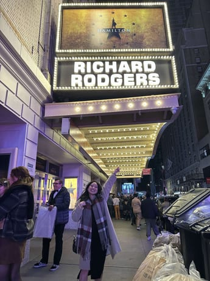
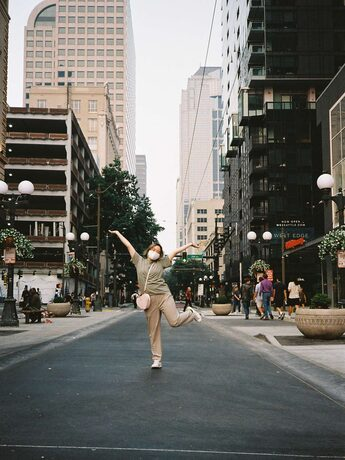
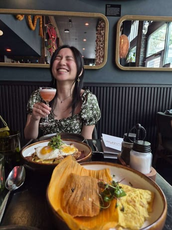
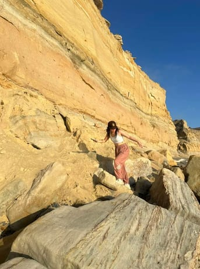
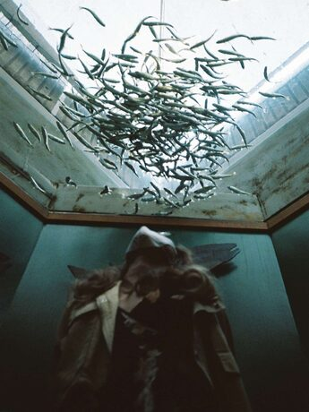
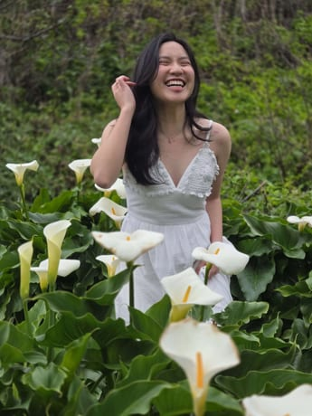
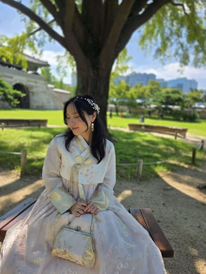
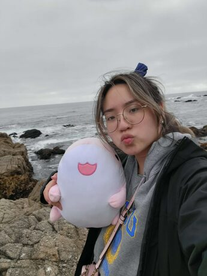
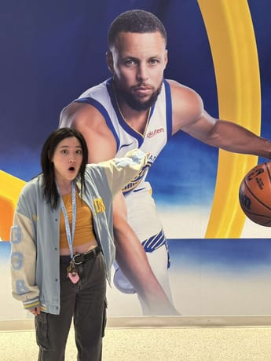
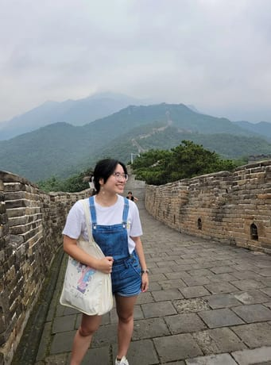
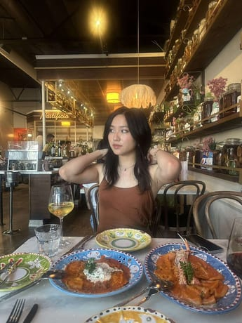
and of course, miss kaya ૮ฅ・ﻌ・აฅ
the princess herself <3
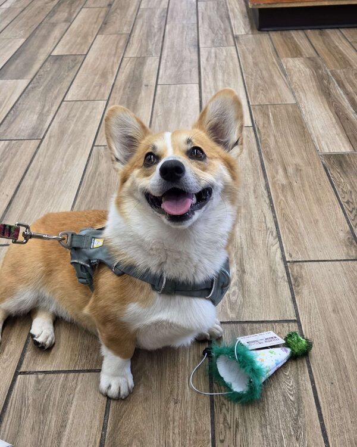
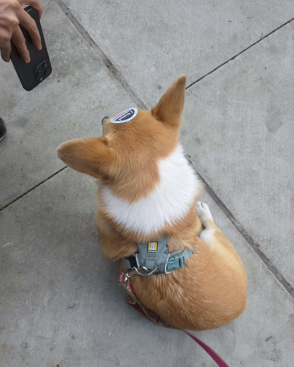
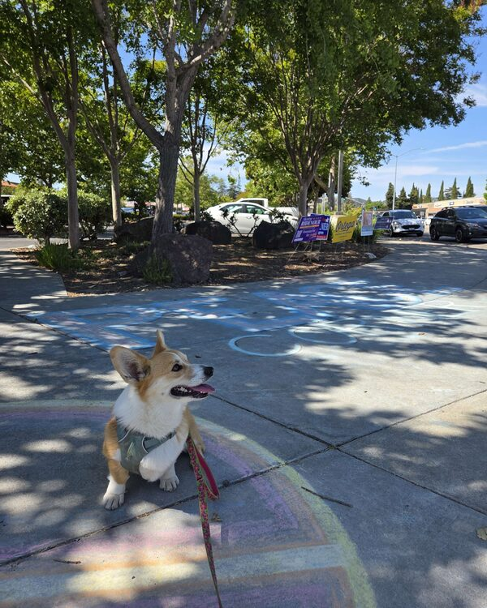
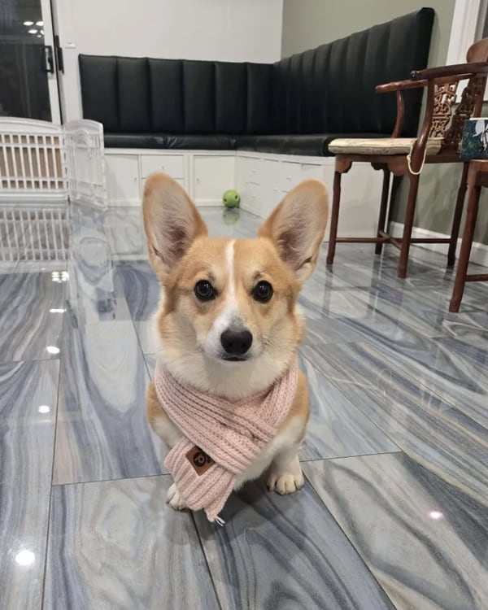
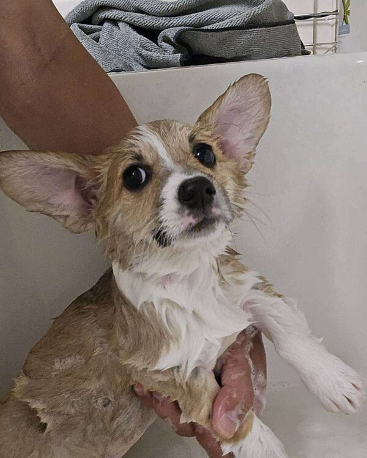
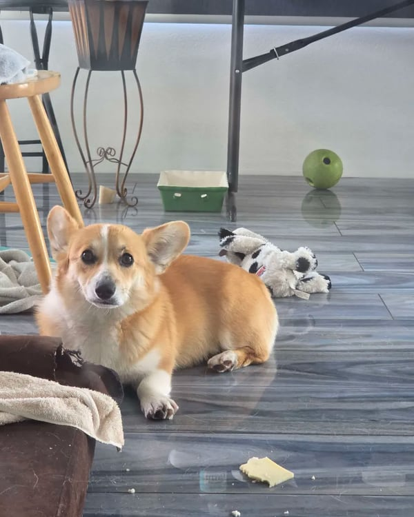
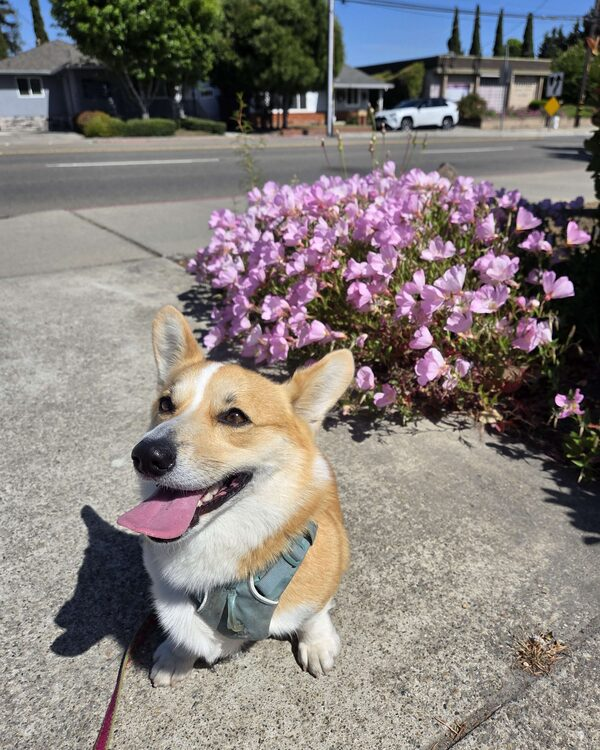
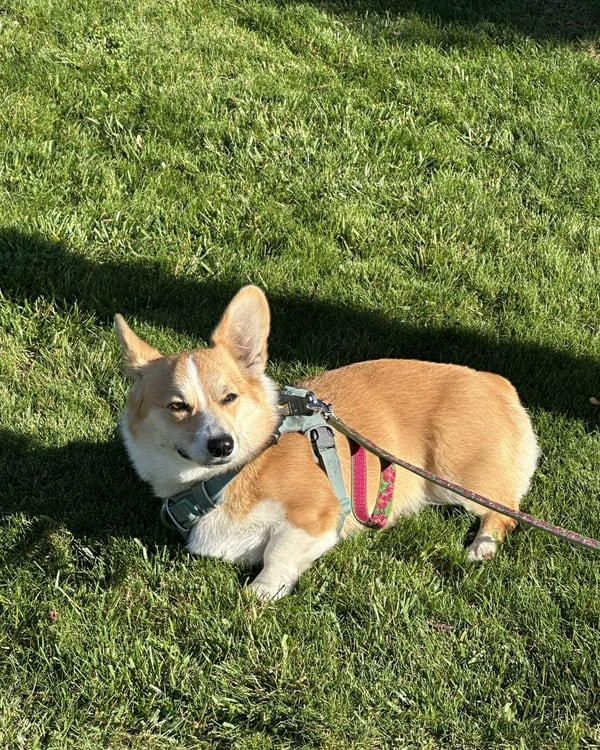
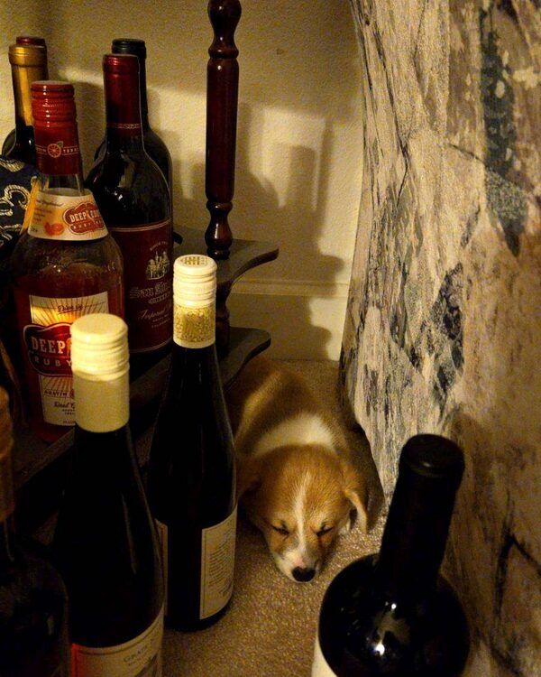
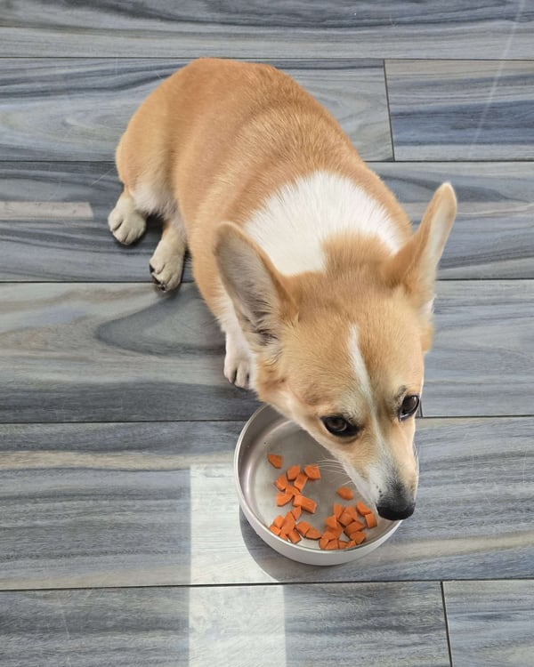
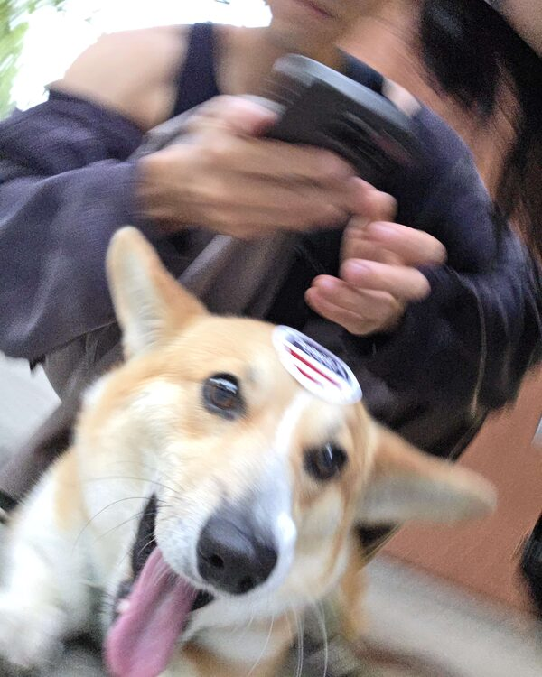
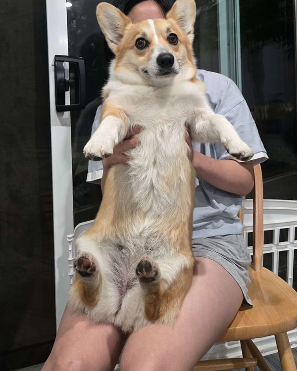
thanks for stopping by! i'm looking for Summer 2027 internships in UX design, research, & product.
have a lovely day ❤